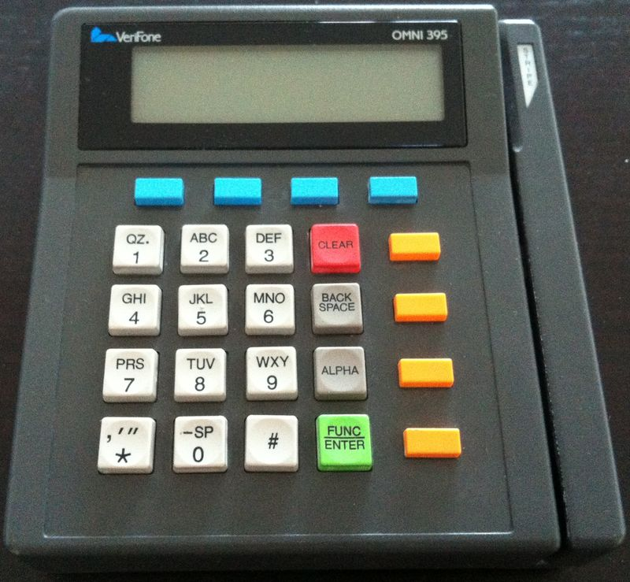
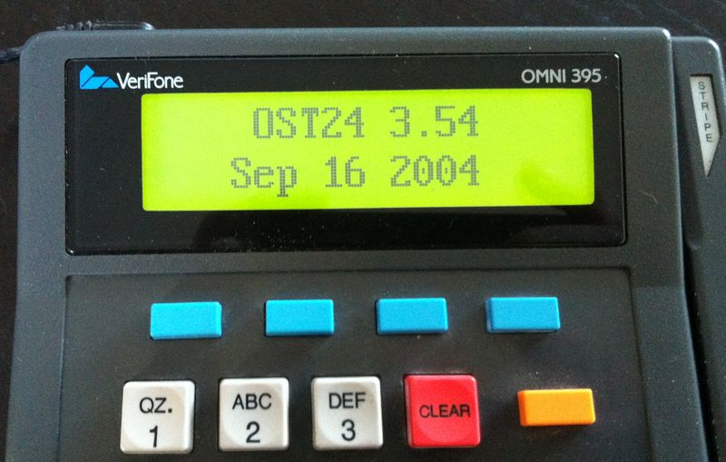

Платежный терминал OMNI-395 изнутри
Мое реальное знакомство с “недо” PC случилось (случайно) в начале 2000-х, когда я устроился в отдел процессинга пластиковых карточек одного банка. А конкретнее, в разработку софта для платежных терминалов, POS-ов. ПОС для приема платежей пластиковыми карточками - это обычно законченный девайс, мини- или микро- компьютер, с экраном, клавиатурой, с читалкой магнитной полосы с карты, часто с принтером, а сейчас еще и ридером для чиповых карт.
Я начал с OMNI-395. Построен на Zilog Z180, имеет до 1М non-volatile памяти для хранения данных (журналов операций, например), AT-модем на 2400 (даже с какой-то коррекцией), двенадцативольтовые порты RS232 для PIN-клавиатуры, принтера и просто порт общего назначения (мы его использовали для подключения к мультипортовому шлюзу в TCP/IP) (увы, не все порты имеют полный набор линий RS232, что вынуждает изобретать программные велосипеды), ну и LCD экран.

Архитектура, кстати, интересная. Для выполнения пользовательского кода применялась виртуальная машина (видимо, так обходились ограничения в адресации, страницы и прочее). Это позволяло использовать для данных много памяти, но вот размер и скорость кода была весьма скромная. Приходилось, например, не использовать родной sprintf, а писать свой, чтобы избежать переполнение локального стека и т.д. Расчет табличного CRC по 5-10КБ данных работал видимые секунды.

Хотя, положа руку на сердце, по сравнению с терминалами других фирм в то время (Injenico, Nurit и т.д.), где часто надо было заниматься ерундой типа ручного переключения страниц памяти и там хранить журналы, среда VeriFone (TXO) давала почти стандартную библиотеку C, где с портами и файлами можно было работать через read/write/ioctl и т.д. А то, что шаловливые умы разработчиков обычно хотят запихнуть в несчастный девайс слона - и вызывало проблемы. Когда со временем ограничения были более менее освоены, разработка стала почти беспроблемной.
Компилятор С поддерживал почти всю стандартную библиотеку и раздельную компиляцию модулей. Загрузочные же модули (R-модули), можно было динамически запускать прямо из пользователького кода (типа механизма оверлеев или CHAIN в классических бейсиках).
И тут дед мороз принес списанный старенький OMNI-395, и радости моей не было предела. Откупоривать будем? Конечно!
Включаем, на всякий случай, и, о чудо, там еще загружена одна из моих прошивок.

Итак, вид изнутри.

Два платы - верхняя, под клавиатурой, и нижняя, с разъемам.


Раскопаю компилятор и загрузчик в сусеках, попробую написать что-нибудь.
Увы, описания деталей аппаратной части я не нашел, а официальная документация описывает только стандартную библиотеку и немного виртуальную машину, в коды которой компилируется пользовательский код.
Конечно, OMNI-395 можно спокойно использовать в качестве НЕДО-PC как он есть. Например, как контроллер чего-либо. Если нужны порты общего назначения, то подходит RS-232 (DTR/RTS – вывод, CTS/DSR – ввод).
А идеале можно диассемблировать прошивку (там всего 64КБ), и поняв архитектуру, уже писать чисто на Z80, и тогда работать будет гораздо быстрее.
P.S.
Надо сказать, что, несмотря на смену аппаратной платформы и компилятора (не один раз), у VefiFone отличная приемственность интерфейса библиотек, что позволяет портировать прошивки на последующие модели с минимальным изменениями. После 395-го я еще поработал с OMNI-3350, 3750, VX510, VX610.
Кстати, по тэгу #cardpayments в Твиттере я выкладываю фотографии ПОСов, пинпадов и прочих устройств приема банковских карточек, если кому интересно.
Disclaimer